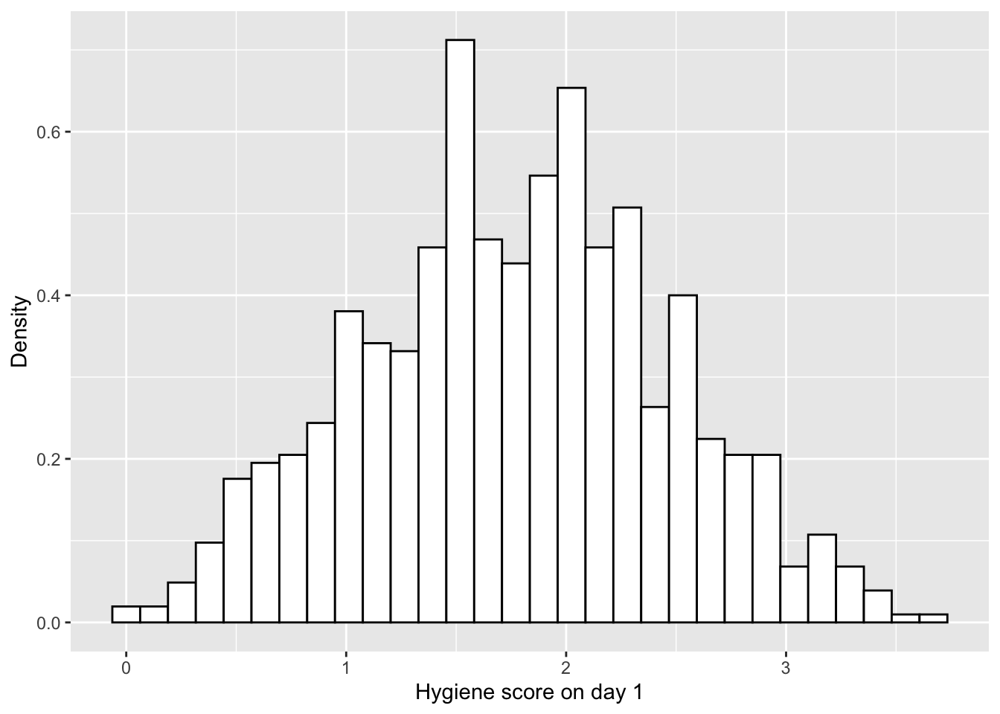
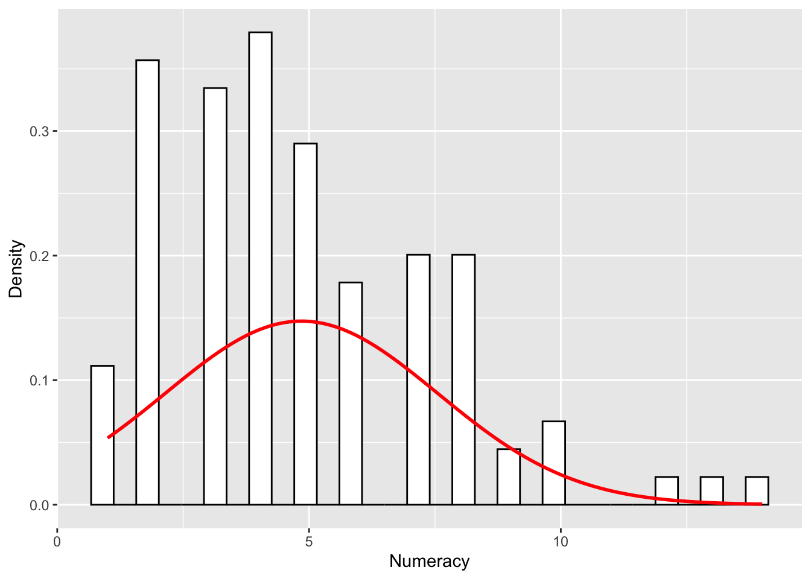
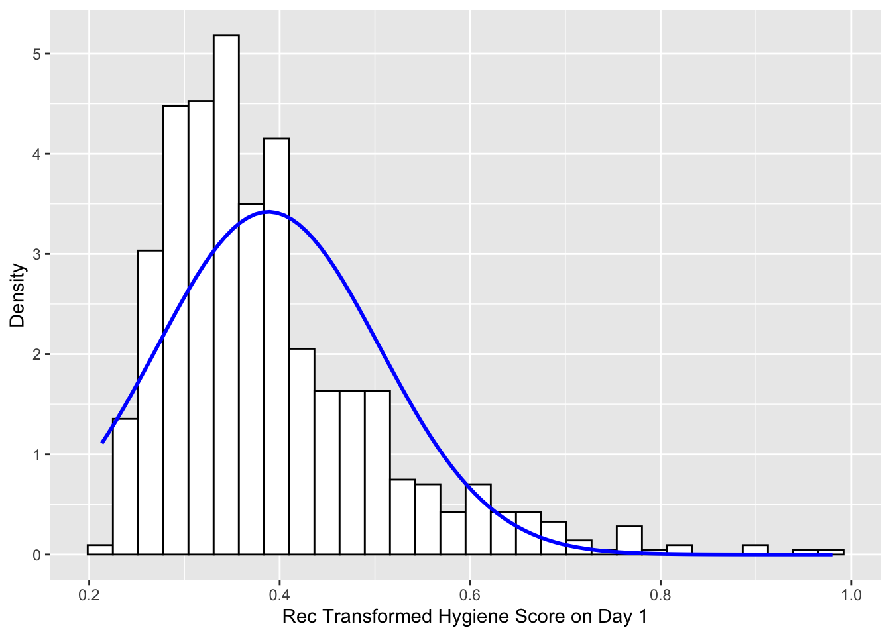

The following objects are masked from 'package:ggplot2':
%+%, alpha
The following object is masked from 'package:car':
logit
5.1. What will this chapter tell me?
How can we turn the ugly data into a beautiful swan?
5.2. What are assumptions?
Different statistical models assume different things.
The assumptions need to be true when statistical models are going to reflect reality accurately.
5.3. Assumptions of parametric data
Parametric statistics are based on assumption about the distribution of population from which the sample was taken.
Nonparametric statistics are not based on assumptions, that is, the data can be collected from a sample that does not follow a specific distribution.
Parametric test requires data from one of the large catalogue of distributions that statisticians have described.
According to the central limit theorem, as samples get large, the sampling distribution has a normal distribution with a mean equal to the population mean.
Most parametric tests based on the normal distribution have four basic assumptions that must be met for the test to be accurate.
Normally distributed data
Homogeneity of variance: Variances should be the dame throughout the data.
Interval data: Data should be measured at least at the interval level.
Independence (This assumption is different depending on the test we’re using)
5.4. Packages used in this chapter
car, ggplot2, pastecs, psych, Rcmdr
5.5. The assumption of normality
We assume that the sampling distribution is normally distributed, but we don’t have access to this distribution.
Central limit theorem: If the sample data are approximately normal then the sampling distribution will be also normal.
General linear models assume that errors in the model are normally distributed.
5.5.1. Oh no, it’s that pesky frequency distribution again: checking normality visually
First, let’s plot a histogram of DownloadFestival.dat:
dlf <-read.delim("dfno.dat", header =TRUE) hist.day1 <-ggplot(dlf, aes(day1)) +geom_histogram(aes(y = ..density..),color ="black",fill ="white" ) +labs(x ="Hygiene score on day 1", y ="Density")hist.day1
Warning: The dot-dot notation (`..density..`) was deprecated in ggplot2 3.4.0.
ℹ Please use `after_stat(density)` instead.
`stat_bin()` using `bins = 30`. Pick better value with `binwidth`.

We can add a normal curve, and we need to tell ggplot2 what mean and SD we’d like on that curve.
The stat_function() command draws the normal curve using the function dnorm():
Q-Q plot (quantile-quantile plot) is another useful graph that we can inspect to see if a distribution is normal. Q-Q plots the cumulative values we have in our data against the cumulative probability of a particular distribution. Each value is compared to the expected value that the score should have in a normal distribution and they are plotted against one another. The x axis of Q-Q plot represents the z-scores of each point:
We can explore the distribution of the variables using the describe() function in the psych package, or the stat.desc() function of the pastecs package:
describe(dlf$day1)
vars n mean sd median trimmed mad min max range skew kurtosis se
X1 1 810 1.77 0.69 1.79 1.77 0.7 0.02 3.69 3.67 0 -0.42 0.02
stat.desc(dlf$day1, basic =FALSE, norm =TRUE)
median mean SE.mean CI.mean.0.95 var std.dev
1.79000000 1.77113580 0.02436847 0.04783289 0.48099624 0.69353892
coef.var skewness skew.2SE kurtosis kurt.2SE normtest.W
0.39157862 -0.00442835 -0.02577395 -0.42159405 -1.22838457 0.99591522
normtest.p
0.03198482
We can combine two or more variables by using cbind() function.
describe(cbind(dlf$day1, dlf$day2, dlf$day3))
vars n mean sd median trimmed mad min max range skew kurtosis se
X1 1 810 1.77 0.69 1.79 1.77 0.70 0.02 3.69 3.67 0.00 -0.42 0.02
X2 2 264 0.96 0.72 0.79 0.87 0.61 0.00 3.44 3.44 1.08 0.76 0.04
X3 3 123 0.98 0.71 0.76 0.90 0.61 0.02 3.41 3.39 1.01 0.59 0.06
We can select rows and columns using [rows, colomns], therefore, dlf[, c("day1", "day2", "day3")] means from the dlf dataframe select all of the rows (because nothing is specified before the comma) and select the columns labelled day1, day2, day3 .
If the skew divided by its standard error is greater than 2 then it is significant (at p< 0.05).
If we want to change our output’s decimal places, we can use the round() function.
RExam.dat contains data regarding students’ performance on an R exam. There are four variables measured: exam, computer, lecture and numeracy. A variable uni indicates whether the student attended Sussex university of Duncetown university.
Let’s open the file and set the variable uni to be a factor by executing:
`stat_bin()` using `bins = 30`. Pick better value with `binwidth`.

The exam scores’ distribution is quite not normal; it looks bimodal (two peaks).
The bimodal distribution of R exam scores instantly indicates a trend that students are typically either very good at statistics or struggle with it.
5.5.3.2. Running the analysis for different groups
If we want to obtain separate descriptive statistics for each of the universities, we can use the by()function. We can simply enter the name of our dataframe or variables that we’d like to analyse, we can specify a variable by which we want to split the output (in this case, it’s uni). We then tell it which function we want to apply to the data:
by(data = rexam$exam, INDICES = rexam$uni, FUN = describe)
rexam$uni: Duncetown University
vars n mean sd median trimmed mad min max range skew kurtosis se
X1 1 50 40.18 12.59 38 39.85 12.6 15 66 51 0.29 -0.72 1.78
------------------------------------------------------------
rexam$uni: Sussex University
vars n mean sd median trimmed mad min max range skew kurtosis se
X1 1 50 76.02 10.21 75 75.7 8.9 56 99 43 0.26 -0.46 1.44
We can do the same thing by executing:
by(data = rexam$exam, INDICES = rexam$uni, FUN = stat.desc)
rexam$uni: Duncetown University
nbr.val nbr.null nbr.na min max range
50.0000000 0.0000000 0.0000000 15.0000000 66.0000000 51.0000000
sum median mean SE.mean CI.mean.0.95 var
2009.0000000 38.0000000 40.1800000 1.7803210 3.5776890 158.4771429
std.dev coef.var
12.5887705 0.3133094
------------------------------------------------------------
rexam$uni: Sussex University
nbr.val nbr.null nbr.na min max range
50.0000000 0.0000000 0.0000000 56.0000000 99.0000000 43.0000000
sum median mean SE.mean CI.mean.0.95 var
3801.0000000 75.0000000 76.0200000 1.4432079 2.9002348 104.1424490
std.dev coef.var
10.2050208 0.1342413
by(rexam$exam, rexam$uni, describe) and by(rexam$exam, rexam$uni, stat.desc have the same effect as those above.
We can also include any options for the function we’re using by adding them in at the end. For example:
exam computer lectures numeracy uni
1 18 54 75.0 7 Duncetown University
2 30 47 8.5 1 Duncetown University
3 40 58 69.5 6 Duncetown University
4 30 37 67.0 6 Duncetown University
5 40 53 44.5 2 Duncetown University
6 15 48 76.5 8 Duncetown University
7 36 49 70.0 3 Duncetown University
8 40 49 18.5 7 Duncetown University
9 63 45 43.5 4 Duncetown University
10 31 62 100.0 6 Duncetown University
11 22 67 48.0 3 Duncetown University
12 47 62 10.5 3 Duncetown University
13 38 38 57.5 1 Duncetown University
14 34 37 61.5 8 Duncetown University
15 54 54 54.0 4 Duncetown University
16 35 48 71.0 5 Duncetown University
17 33 48 14.0 9 Duncetown University
18 38 42 55.5 3 Duncetown University
19 29 57 72.5 2 Duncetown University
20 36 55 38.0 4 Duncetown University
21 59 41 40.0 1 Duncetown University
22 31 42 85.5 4 Duncetown University
23 34 48 52.0 4 Duncetown University
24 28 44 8.0 3 Duncetown University
25 50 42 62.5 6 Duncetown University
26 59 42 70.5 3 Duncetown University
27 33 40 98.0 4 Duncetown University
28 57 52 34.5 2 Duncetown University
29 25 56 62.5 3 Duncetown University
30 53 54 91.5 2 Duncetown University
31 65 52 97.5 7 Duncetown University
32 47 55 31.5 2 Duncetown University
33 28 61 80.5 7 Duncetown University
34 43 56 66.5 4 Duncetown University
35 47 52 57.5 2 Duncetown University
36 60 49 67.0 4 Duncetown University
37 45 43 48.5 4 Duncetown University
38 22 51 61.0 4 Duncetown University
39 39 49 76.0 3 Duncetown University
40 43 56 30.5 2 Duncetown University
41 66 41 45.0 2 Duncetown University
42 36 67 21.5 4 Duncetown University
43 26 35 72.5 5 Duncetown University
44 58 49 66.0 8 Duncetown University
45 53 62 90.5 6 Duncetown University
46 37 66 48.5 4 Duncetown University
47 48 48 62.0 3 Duncetown University
48 32 46 49.0 1 Duncetown University
49 42 46 60.0 5 Duncetown University
50 34 58 21.0 5 Duncetown University
sussexData
exam computer lectures numeracy uni
51 56 30 84.5 7 Sussex University
52 76 48 51.0 8 Sussex University
53 72 54 58.5 5 Sussex University
54 77 44 42.0 6 Sussex University
55 77 54 65.5 9 Sussex University
56 66 58 56.0 7 Sussex University
57 62 59 71.5 2 Sussex University
58 86 54 48.5 5 Sussex University
59 97 35 84.5 5 Sussex University
60 72 56 47.5 2 Sussex University
61 69 53 54.0 3 Sussex University
62 87 56 70.5 6 Sussex University
63 88 65 73.0 5 Sussex University
64 72 50 79.0 12 Sussex University
65 75 39 82.5 8 Sussex University
66 74 40 74.5 3 Sussex University
67 68 50 85.0 2 Sussex University
68 81 57 69.5 10 Sussex University
69 77 39 42.0 7 Sussex University
70 71 41 43.0 8 Sussex University
71 60 48 46.5 6 Sussex University
72 74 46 36.5 8 Sussex University
73 80 54 72.5 4 Sussex University
74 68 55 62.0 4 Sussex University
75 64 27 81.5 5 Sussex University
76 94 57 100.0 13 Sussex University
77 65 73 27.0 14 Sussex University
78 72 54 59.5 2 Sussex University
79 75 54 75.0 3 Sussex University
80 92 50 34.0 2 Sussex University
81 89 56 78.0 4 Sussex University
82 83 57 80.5 5 Sussex University
83 80 54 84.0 2 Sussex University
84 95 55 37.5 4 Sussex University
85 99 54 57.0 3 Sussex University
86 80 52 66.0 8 Sussex University
87 81 67 59.0 10 Sussex University
88 75 44 68.5 5 Sussex University
89 78 57 88.5 3 Sussex University
90 65 54 55.0 8 Sussex University
91 80 51 86.0 5 Sussex University
92 86 55 68.5 10 Sussex University
93 73 51 64.0 7 Sussex University
94 81 45 12.5 1 Sussex University
95 69 59 52.5 7 Sussex University
96 60 43 37.0 5 Sussex University
97 69 57 46.0 2 Sussex University
98 71 50 97.5 2 Sussex University
99 82 50 70.5 4 Sussex University
100 58 47 78.0 3 Sussex University
These commands each create a new dataframe that is based on a subset of the rexam dataframe. We need to be careful that the term we specify to select cases exactly matches the labelling in the dataset otherwise we’ll end up with an empty dataset.
Having created our separate dataframes, we can generate histograms using the same commands as before, but specifying the dataframe for the subset of data:
We can see that for exam marks the distributions are both fairly normal. This is because the two samples are combined and these two normal distributions created a bimodal one at the previous figure.
The Shapiro-Wilk test compares the scores in the sample to a normally distributed set of scores with the same mean and standard deviation. If the test is significant (p < .05), then the distribution in question is significantly different from a normal distribution.
5.6.1. Doing the Shapiro-Wilk test in R
shapiro.test() function tests the variables for normality:
shapiro.test(rexam$exam)
Shapiro-Wilk normality test
data: rexam$exam
W = 0.96131, p-value = 0.004991
shapiro.test(rexam$numeracy)
Shapiro-Wilk normality test
data: rexam$numeracy
W = 0.92439, p-value = 2.424e-05
Although the distributions seemed quite normal, the Shapiro-Wilk tests was highly significant, indicating that both distributions are not normal. The value of W corresponds to the value of normtest.W, and the p-value corresponds to normtest.p from the stat.desc function.
We can adjust shapiro.test to by() function we came across earlier, using it instead of FUN:
by(rexam$exam, rexam$uni, shapiro.test)
rexam$uni: Duncetown University
Shapiro-Wilk normality test
data: dd[x, ]
W = 0.97217, p-value = 0.2829
------------------------------------------------------------
rexam$uni: Sussex University
Shapiro-Wilk normality test
data: dd[x, ]
W = 0.98371, p-value = 0.7151
by(rexam$numeracy, rexam$uni, shapiro.test)
rexam$uni: Duncetown University
Shapiro-Wilk normality test
data: dd[x, ]
W = 0.94082, p-value = 0.01452
------------------------------------------------------------
rexam$uni: Sussex University
Shapiro-Wilk normality test
data: dd[x, ]
W = 0.93235, p-value = 0.006787
This result shows that the percentages on the R exam are indeed normal within the two groups.
We can also draw Q-Q plots for the variables to help us to interpret the results of the Shapiro-Wilk test.
If the data are normally distributed (Numeracy), then the observed values should fall exactly along a straight line.
5.6.2. Reporting the Shapiro-Wilk test
” The percentage on the R exam, W = 0.96, p = 0.005, and the numeracy scores, W = 0.92, p < .001, were both significantly non-normal.”
5.7. Testing for homogeneity of variance
The homogeneity of variance: Although the means increase, the spread of scores is the same at each level of the concert variable.
The heterogeneity of variance: At some levels of the variable the variance of scores is different than other levels.
5.7.1. Levene’s test
Levene’s test tests the null hypothesis that the variances in different groups are equal. If Levene’s test is significant at p<= .05 then we can conclude that the null hypothesis is incorrect and that the variances are significantly different.
5.7.1.1. Levene’s test with R Commander
Data -> Import data -> from text file, clipboard, or URL …, and then select the file RExam.dat
We need to convert uni to a factor because at the moment it is simply 0s and 1s so R doesn’t know that it’s a factor.
Data -> Manage variables in active data set -> Convert numeric variables to factors
Statistics -> Variances -> Levene’s test, and select a grouping variable, which is uni here. For the centring, the median tends to be more accurate and is the default.
5.7.1.2. Levene’s test with R
To use Levene’s test, we use the leveneTest() function from the car package. This function takes the general form: leveneTest(outcome variable, group, center = median/mean). The outcome variable is what we want to test the variances. The grouping variable must be a factor:
leveneTest(rexam$exam, rexam$uni)
Levene's Test for Homogeneity of Variance (center = median)
Df F value Pr(>F)
group 1 2.0886 0.1516
98
leveneTest(rexam$exam, rexam$uni, center = mean)
Levene's Test for Homogeneity of Variance (center = mean)
Df F value Pr(>F)
group 1 2.5841 0.1112
98
5.7.1.3. Levene’s test output
The result is non-significant for the R exam scores. This indicates that the variances are not significantly different. However, for the numeracy scores, Levene’s test is significant, indicating that the variances are significantly different.
5.7.2. Reporting Levene’s test
For the percentage on the R exam, the variances were similar for Duncetown and Sussex University students, F(1, 98) = 2.09, ns, but for numeracy scores the variances were significantly different in the two groups, F(1, 98) = 5.37, p = .023
5.7.3. Hartley’s F_max: the variance ratio
As with the Shapiro-Wilk test, when the sample size is large, small differences in group variances can produce a Levene’s test that is significant. We can double check by looking at Hartley’s F_max, which is the ratio of the variances between the group with the biggest variance and the group with the smallest variance.
5.8. Correcting problems in the data
What can we do about outliers and heterogeneity of variance?
5.8.1. Dealing with outliers
There are three main options dealing with outliers
Remove the case: If we have a good reason to believe that a case is not from the population that we intended to sample, we can delete that case.
Transform the data: The skew occurred by the outlier can be reduced by applying transformations to the data.
Change the score: If transformation fails, we can consider replacing the score. There are three options: The next highest score plus one, Convert back from a z-score, and The mean plus two standard deviations.
5.8.2. Dealing with non-normality and unequal variances
5.8.2.1. Transforming data
The idea behind transformations is that we do something to every score to correct for distributional problems, outliers or unequal variances. Transforming the data won’t change the relationships between variables, but it does change the differences between different variables. If we are looking at differences within variables, then we need to transform all levels of those variables.
Data transformations and their uses
Log transformation: It reduces positive skew by squashing the right tail of the distribution. We need to set all numbers positive because we can’t take the log of zero or negative numbers.
Square root transformation: It brings any large scores closer to the center, rather like the log transformation.
Reciprocal transformation: It reduces the impact of large scores, but it reverses the scores.
Reverse score transformations: Any one of the above transformations can be used to correct negatively skewed data, but first we have to reverse the scores. To do this, we can subtract each score from the highest score obtained.
We need to know whether the statistical models we apply perform better on transformed data than they do when applied to data that violate the assumption that the transformation corrects. If a statistical model is still accurate even when its assumptions are broken it is said to be a robust test.
5.8.2.2. Choosing a transformation
We have to decide which transformation is best by trial and error.
5.8.3. Transforming the data using R
5.8.3.1. Computing new variables
Addition: We can add two variables together, or add a constant to our variables.
Subtraction: We can subtract one variable from another.
Multiply: We can multiply two variables together, or multiply a variable by any number.
Exponentiation: We can raise the preceding term by the power of the succeeding term.
Less than: It gives the answer TRUE (or 1) or FALSE (or 0)
Double equals: It creates a variable male in the dlf dataframe that contains the value TRUE if the variable gender was the word ‘Male’
mean(is.na(dlf$day2)) tells us that the mean is 0.674, so 67.4% of people are missing a hygiene score on day2.
5.8.3.2. The log transformation in R
To transform the variable day1, and create a new variable logday1, we execute this command:
dlf$logday1 <-log(dlf$day1)
For the day2 hygiene scores there is a value of 0 in the original data, so we can’t transform it by taking log. To overcome this, we should add a constant to our original scores before we take the log of those scores:
dlf$logday1 <-log(dlf$day1 +1)
The advantage of adding 1 is that the logarithm of 1 is equal to 0, so people who scored a zero before the transformation score a zero after the transformation.
To do a reciprocal transformation, we use ‘1/variable’. However, if the data contain a zero value, we can add a constant to our variable and then divide it.
`stat_bin()` using `bins = 30`. Pick better value with `binwidth`.

hist.recday2 <-ggplot(dlf, aes(recday2)) +geom_histogram(aes(y=..density..),colour="black",fill="white" ) +labs(x="Rec Transformed Hygiene Score on Day 2", y ="Density") +stat_function(fun = dnorm,args =list(mean =mean(dlf$recday2, na.rm =TRUE),sd =sd(dlf$recday2, na.rm =TRUE)),colour ="blue", size =1 )hist.recday2
`stat_bin()` using `bins = 30`. Pick better value with `binwidth`.
hist.recday3 <-ggplot(dlf, aes(recday3)) +geom_histogram(aes(y=..density..),colour="black",fill="white" ) +labs(x="Rec Transformed Hygiene Score on Day 3", y ="Density") +stat_function(fun = dnorm,args =list(mean =mean(dlf$recday3, na.rm =TRUE),sd =sd(dlf$recday3, na.rm =TRUE)),colour ="blue", size =1 )hist.recday3
`stat_bin()` using `bins = 30`. Pick better value with `binwidth`.
5.8.3.5. The ifelse() function in R
The ifelse() function is used to create a new variable, or change an old variable, depending on some other values. This function needs three arguments: a conditional argument to test, what to do if the test is true, and what to do if the test is false.
For example, to remove the outliers in the day1 hygiene score:
This command creates a new variable called day1NoOutlier which takes the value NA if day1 is greater than 4, but is the value of day1 if day1 is less than 4
The rowSums() and rowMeans() functions allow us to choose what to do with missing data, by using the na.rm option, which asks ‘should missing values (na) be removed (rm)?’
To obtain the mean hygiene score across three days, removing anyone with any missing values, we would use:
[1] 1.8666667 0.8900000 NA NA NA NA NA
[8] NA NA 0.7000000 NA 0.4966667 NA 1.6600000
[15] NA NA NA NA NA NA 1.2100000
[22] NA NA NA NA NA NA NA
[29] NA 0.7033333 0.9000000 NA NA NA 1.4766667
[36] NA 1.3166667 NA NA NA NA NA
[43] NA NA NA NA NA 0.6000000 NA
[50] NA NA NA NA 0.5633333 1.0266667 NA
[57] NA NA NA NA NA NA NA
[64] NA NA NA 0.9366667 NA NA NA
[71] NA NA NA NA NA NA NA
[78] NA NA NA NA NA NA 2.3666667
[85] NA NA NA NA NA NA NA
[92] NA NA NA NA NA NA 1.0333333
[99] NA 2.1033333 NA NA 0.9300000 NA NA
[106] NA NA NA NA 1.9266667 NA NA
[113] NA NA NA NA NA NA NA
[120] NA NA NA NA NA NA NA
[127] NA NA NA NA NA NA 1.3600000
[134] NA 1.9066667 NA NA NA NA NA
[141] NA NA NA NA NA NA NA
[148] NA NA NA NA NA 2.1600000 NA
[155] NA NA NA NA NA NA NA
[162] NA 2.3000000 0.6100000 0.8600000 NA NA NA
[169] NA NA NA NA NA NA NA
[176] NA NA NA NA NA NA NA
[183] NA NA NA NA NA NA NA
[190] NA 0.5633333 NA NA NA NA NA
[197] NA NA NA NA NA 1.2733333 NA
[204] NA NA NA NA NA NA NA
[211] NA NA NA NA NA NA NA
[218] NA NA NA NA NA NA NA
[225] NA NA NA NA NA 0.8500000 NA
[232] NA NA NA NA NA NA 1.1333333
[239] NA NA 0.6533333 NA NA NA NA
[246] NA NA NA NA NA NA NA
[253] NA 1.2400000 NA NA NA NA NA
[260] NA NA 1.2200000 NA NA NA NA
[267] NA 1.3166667 1.4066667 NA NA NA NA
[274] NA NA 2.2133333 NA 0.7300000 NA NA
[281] 0.4766667 0.6033333 NA NA NA 1.3133333 NA
[288] NA NA NA 1.1566667 1.0533333 NA NA
[295] NA NA NA NA 2.1733333 NA NA
[302] NA NA NA NA NA NA NA
[309] 1.0433333 NA NA NA NA NA NA
[316] 1.3333333 NA NA NA NA NA NA
[323] NA NA NA NA NA NA NA
[330] NA NA NA NA NA NA NA
[337] NA NA NA NA NA NA 1.1533333
[344] 0.8366667 NA 1.2200000 NA NA NA NA
[351] NA 0.7566667 NA NA NA NA NA
[358] 1.0333333 NA NA NA NA NA NA
[365] NA NA NA NA NA NA NA
[372] 1.1100000 1.1200000 0.5533333 1.6700000 NA 0.4133333 0.5333333
[379] NA NA NA NA NA NA NA
[386] NA NA NA NA NA NA NA
[393] NA NA NA NA NA NA NA
[400] NA NA 0.8666667 NA NA NA NA
[407] NA 0.4466667 NA NA 0.8400000 0.4000000 NA
[414] 1.0233333 1.2733333 NA NA NA NA 1.1033333
[421] NA NA NA NA NA 1.0400000 0.6300000
[428] NA NA NA NA NA 0.7800000 NA
[435] 0.6800000 NA NA NA NA NA NA
[442] NA NA NA NA NA NA NA
[449] NA NA NA NA 0.9966667 NA NA
[456] NA NA NA NA NA 1.2033333 0.6800000
[463] NA NA NA NA NA NA NA
[470] NA NA NA NA NA NA NA
[477] NA NA 1.7700000 NA NA 1.8600000 NA
[484] NA NA NA NA NA NA NA
[491] NA NA NA NA NA 0.9833333 NA
[498] NA NA NA NA NA NA NA
[505] NA NA NA NA NA NA NA
[512] NA NA NA NA NA NA 1.5333333
[519] NA NA NA NA NA 1.5266667 NA
[526] NA NA 1.7133333 NA NA 0.7366667 NA
[533] NA NA NA NA NA NA NA
[540] 0.6600000 NA NA 0.7800000 0.6733333 1.4600000 NA
[547] NA NA NA NA NA NA NA
[554] 1.2700000 NA NA NA NA 1.0366667 NA
[561] NA NA NA NA 0.7400000 NA NA
[568] NA NA NA NA NA NA NA
[575] NA NA NA NA NA NA NA
[582] NA NA NA 0.9266667 NA NA NA
[589] NA NA NA NA 1.2400000 NA NA
[596] NA NA NA NA NA NA NA
[603] NA NA 1.9466667 1.8166667 NA NA NA
[610] 0.8266667 NA 0.5233333 NA 1.6266667 NA NA
[617] NA 2.8166667 NA NA NA NA 3.0833333
[624] NA 1.4500000 NA 1.1733333 1.1500000 NA NA
[631] 0.3766667 NA NA NA NA NA NA
[638] 0.3266667 NA 1.5866667 NA 1.0166667 NA 1.4400000
[645] NA NA 1.1566667 NA NA NA NA
[652] NA NA 1.2133333 NA NA NA 1.3533333
[659] NA NA NA NA NA NA NA
[666] NA NA NA 1.2200000 NA NA NA
[673] NA NA NA NA NA NA NA
[680] NA NA NA NA NA NA NA
[687] NA NA NA 1.0066667 NA NA NA
[694] 1.0066667 1.1800000 NA NA NA NA NA
[701] NA 1.6900000 NA NA NA NA NA
[708] NA NA NA NA 0.8100000 NA NA
[715] NA NA NA NA 1.3666667 NA 0.6333333
[722] NA NA NA NA NA NA NA
[729] NA NA NA NA NA NA 0.4600000
[736] NA NA NA NA NA 1.3066667 NA
[743] NA NA NA NA NA NA NA
[750] NA NA NA NA NA 0.8400000 NA
[757] NA 1.0333333 NA NA NA NA NA
[764] NA NA NA NA NA NA NA
[771] NA NA 0.9466667 3.4100000 1.9666667 NA NA
[778] 1.2266667 NA NA NA NA NA NA
[785] 2.1166667 NA NA 1.1700000 NA NA 0.6533333
[792] NA NA NA NA NA NA NA
[799] NA NA 1.9166667 NA NA NA NA
[806] NA NA NA NA NA
But, a lot of people would be missing. If we want to use everyone who had at least one score for the three days, we can add na.rm = TRUE:
If we don’t mind if people were missing one or two scores, but we do not want to calculate a mean for people who only had one score, we can use the is.na() function first:
[1] NA NA 0.84 3.03 NA 0.85 1.56 3.02 2.29 NA 2.17 NA 1.41 NA NA
[16] 2.79 1.50 NA 2.32 2.05 NA 2.05 1.61 NA 2.30 2.76 1.44 1.06 3.23 NA
[31] NA 0.26 0.47 1.73 NA 1.91 NA 1.91 1.42 1.50 0.11 1.67 2.08 2.05 2.00
[46] 1.52 1.58 NA 1.88 1.32 2.09 2.00 2.64 NA NA 1.79 1.64 1.32 2.97 NA
[61] 2.02 1.79 1.34 NA 1.66 0.60 NA 1.50 NA NA 1.73 NA 2.81 1.52 1.47
[76] 2.64 NA NA 2.29 2.00 2.23 2.45 1.20 NA NA 1.88 0.94 1.85 2.58 0.61
[91] 0.70 1.38 1.94 2.29 1.59 2.46 NA NA 1.50 NA 1.61 2.29 NA 1.85 2.76
[106] 1.64 1.17 1.57 2.23 NA 2.05 2.94 2.39 1.94 2.12 1.11 0.97 1.35 NA 2.50
[121] 1.87 1.33 1.26 1.44 0.55 1.75 2.08 0.85 2.52 3.00 1.41 1.08 NA NA NA
[136] 1.41 2.50 2.17 NA NA 1.66 1.82 1.26 2.67 1.47 1.84 2.58 1.73 1.23 2.32
[151] 2.67 1.02 NA 1.88 1.91 1.64 1.34 1.85 2.08 1.02 1.79 1.94 NA NA NA
[166] 2.03 2.24 1.11 2.21 1.94 2.41 0.88 NA 2.23 1.64 2.14 NA 2.17 1.67 1.00
[181] 0.88 2.20 2.17 2.32 1.64 3.00 NA NA 1.58 2.61 NA 1.57 2.32 1.14 1.93
[196] 2.47 2.29 1.00 1.58 2.44 0.83 NA 1.73 1.58 1.50 1.05 2.05 2.63 NA 2.00
[211] 2.00 1.32 3.14 1.44 NA NA 1.94 2.91 1.85 1.70 2.23 1.11 1.47 2.20 1.82
[226] 1.42 2.44 2.66 1.52 NA 1.29 2.32 0.78 2.84 0.97 1.52 1.70 NA 1.41 1.79
[241] NA 1.47 NA 2.00 0.76 2.20 NA 1.38 NA 0.32 2.58 0.51 0.32 NA 1.51
[256] 1.47 2.50 2.26 2.81 1.87 2.00 NA NA 1.41 1.64 1.64 1.26 NA NA 2.18
[271] 3.02 1.02 2.88 1.54 1.64 NA 1.29 NA 1.77 NA NA NA 1.50 NA 3.38
[286] NA 1.85 NA NA NA NA NA 2.70 1.58 1.00 1.44 2.00 1.60 NA 3.41
[301] 2.02 NA NA 1.50 1.08 1.52 1.26 1.68 NA 1.47 NA NA 1.82 2.17 3.21
[316] NA 0.32 0.55 1.42 1.14 2.64 2.58 2.02 2.00 2.90 1.82 0.50 1.53 2.48 2.05
[331] 2.52 1.88 2.73 2.88 1.67 1.93 1.67 1.20 2.75 NA 0.59 1.50 NA NA 2.35
[346] NA 1.55 2.31 2.23 NA 2.51 NA 2.44 NA 2.17 NA NA NA 2.44 1.44
[361] 0.82 2.50 1.82 1.97 2.52 0.05 2.08 2.39 NA 2.58 2.12 NA NA NA NA
[376] 2.79 NA NA 2.32 2.22 0.58 2.00 0.70 1.00 0.30 1.52 NA 2.34 0.79 2.26
[391] 2.35 1.70 3.09 1.52 0.35 2.70 1.64 0.82 2.73 2.23 1.06 NA NA NA NA
[406] 1.44 2.88 NA NA NA NA NA 2.00 NA NA 1.55 3.29 1.47 0.96 NA
[421] 1.47 NA NA NA NA NA NA 1.38 0.88 0.94 1.91 2.76 NA 2.67 NA
[436] 2.50 1.64 2.26 2.14 0.52 1.08 1.69 2.73 1.91 1.73 3.21 2.11 2.05 2.17 2.17
[451] 2.30 2.56 NA 1.70 1.23 3.20 2.02 2.64 NA 1.61 NA NA 1.82 1.50 2.32
[466] 2.92 1.41 1.35 NA 0.73 NA NA NA 1.61 1.00 NA 2.88 NA NA NA
[481] 1.61 NA 2.78 2.06 0.47 2.87 1.14 NA NA NA 2.08 1.85 1.38 1.14 1.58
[496] NA 2.53 0.67 0.73 1.34 NA 1.00 1.35 NA 0.50 3.08 2.88 1.91 1.41 2.02
[511] 0.76 1.94 NA 2.41 2.17 NA NA NA 2.17 0.47 NA 2.00 0.45 NA 2.55
[526] 0.82 NA NA 1.79 2.28 NA NA 1.41 2.14 NA NA NA 2.62 0.88 NA
[541] 2.20 1.14 NA NA NA NA 1.82 2.44 NA 2.41 2.27 NA 1.88 NA 2.21
[556] NA 2.51 2.05 NA 2.05 2.23 1.76 1.05 1.79 NA NA NA 2.85 NA 1.90
[571] NA 1.97 1.50 3.69 0.50 2.18 2.17 1.58 2.88 2.52 2.20 1.73 2.23 1.97 NA
[586] 2.00 1.91 0.81 1.31 0.38 1.97 0.38 NA 3.20 0.02 2.56 2.02 2.30 2.02 2.05
[601] 1.70 1.61 0.73 NA NA NA NA NA 1.44 NA NA NA NA NA NA
[616] NA NA NA NA 1.14 NA NA NA 3.32 NA 2.29 NA NA 2.20 NA
[631] NA 2.00 NA 2.94 1.55 NA NA NA 1.00 NA 1.00 NA 2.52 NA 2.63
[646] NA NA 0.58 1.67 1.47 1.81 1.91 1.06 NA 2.52 NA 3.44 NA NA 1.76
[661] 1.90 NA 2.52 NA 2.02 1.29 1.26 0.94 NA 0.73 NA 2.23 2.35 NA 1.85
[676] 0.67 NA NA 2.35 1.35 1.94 1.55 1.29 2.17 1.91 2.88 2.36 2.36 2.20 NA
[691] 0.52 0.32 NA NA NA 2.05 1.73 1.94 1.81 NA NA NA 2.57 1.58 NA
[706] 3.15 2.29 0.82 1.93 1.82 1.96 NA 1.02 1.14 2.32 2.16 NA 1.14 NA 1.17
[721] NA NA 1.38 NA 2.73 2.02 2.81 2.47 1.35 2.08 2.50 2.45 2.17 NA NA
[736] 1.51 1.23 NA NA 0.96 NA 0.52 1.56 NA 0.45 2.63 1.70 3.11 1.82 NA
[751] 2.73 NA NA 2.02 NA NA 0.90 NA 2.70 1.97 0.84 1.79 2.84 2.02 NA
[766] 1.08 2.97 0.94 NA 0.97 1.47 2.61 NA NA NA NA 2.14 NA NA 2.67
[781] NA 1.35 NA NA NA 2.32 NA NA NA 2.88 NA NA 2.02 NA NA
[796] NA NA 2.11 1.23 0.64 NA NA NA NA 0.52 NA NA 1.47 1.28 1.26
5.8.4. When it all goes horribly wrong
If transformations don’t work, there are some other options.
The first is to use a test that does not rely on the assumption of normally distributed data.
Another approach is to use robust methods.
Trimmed mean is simply a mean based on the distribution of scores after some percentage of scores has been removed from each extreme of the distribution.
M-estimator determines the optimal amount of trimming necessary to give a robust estimation, rather than the researcher deciding before the analysis how much of the data to trim.
Trimmed mean and M-estimator produces accurate results even when the distribution is not symmetrical, because by trimming the ends of the distribution we remove outliers and skew.
The second general procedure is the bootstrap. Lack of normality prevents us from knowing the shape of the sampling distribution unless we have big samples. In bootstrapping, the sample data are treated as a population from which smaller samples (= bootstrap samples) are taken. The statistic interest is calculated in each sample, and by taking many samples the sampling distribution can be estimated. The SE of the statistic is estimated from the SD of this sampling distribution created from the bootstrap samples.